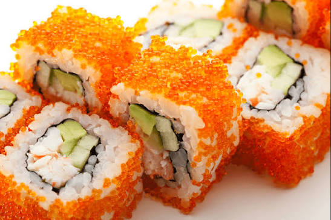

This was the first maki that my parents introduced to me when I was a kid. They bought it when they were out for groceries when we were still living in Tondo. At first, it tasted very weird for little me, but eventually started liking the taste. I even started to learn how to use chopsticks at such an early age. It holds a very fond memory of me and my parents enjoying maki for the first time together.
Here is my reflection while I was making this website! :D